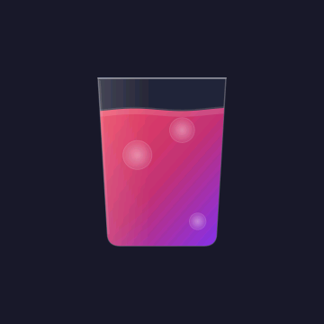
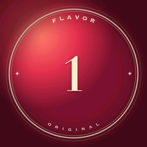
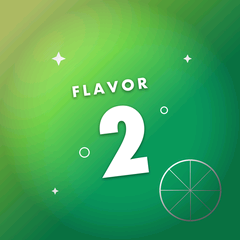

1BOOT

HOME SODA MACHINE
Powering on
Getting everything ready.
2PRECONDITION · 2 SELECTED + SYNCED
⌂HOME
◒MIX
↻SERVICE
ϟSTATUS
⚙SETUP
CHOOSE A FLAVOR
Tap here or at the faucet
✓ SYNCED

TAP TO SELECT
✓ SELECTED3TAP THE OTHER FLAVOR
⌂HOME
◒MIX
↻SERVICE
ϟSTATUS
⚙SETUP
CHOOSE A FLAVOR
Tap here or at the faucet
✓ SYNCED
✓ SELECTED
TAP TO SELECT
5WAIT FORFLAVOR 1 · SELECTED · SYNCED


 2
→
2
→
4WATCH THIS SCREEN2→1 ARTWORK CHANGES